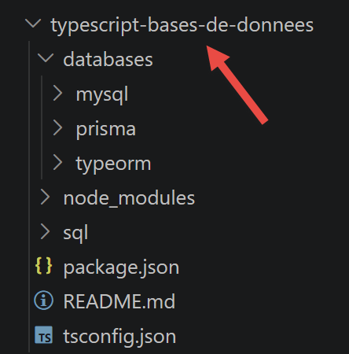
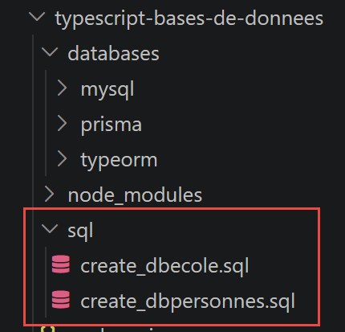

7. Accès aux bases de données

Les chapitres qui suivent complètent le cours par l'accès aux bases de données depuis des scripts TypeScript, en s'inspirant des chapitres Utilisation du SGBD MySQL et Utilisation de l'ORM SQLALCHEMY du cours Introduction à Python 3 et au framework Flask (2019). Trois approches y sont présentées successivement : l'accès direct au SGBD avec le pilote natif mysql2, puis deux ORM (object-relational mapping) — TypeORM, puis Prisma.
7.1. Accès direct à la base de données
Deux scripts SQL, fournis avec ce chapitre, permettent de créer les base de données de test : dbpersonnes (une seule table, utilisée par le chapitre sur le pilote natif) et dbecole (quatre tables liées entre elles, utilisée par les deux chapitres sur les ORM).

7.1.1. Préparer la base [dbpersonnes]
La base dbpersonnes ne comporte qu'une seule table, personnes, reprenant le même schéma que celui utilisé par le cours Python (colonnes id, prenom, nom, age, avec une contrainte d'unicité sur le couple (nom, prenom)). Le script sql/create_dbpersonnes.sql ci-dessous crée la base, l'utilisateur applicatif et la table, puis y insère cinq personnes arbitraires :
| -- create_dbpersonnes.sql
-- Recrée la base [dbpersonnes] utilisée par le chapitre « Accès à MySQL avec le
-- pilote natif [mysql2] », avec des données arbitraires (les originales du cours
-- Python/Flask 2020 n'étant plus disponibles).
--
-- Utilisation :
-- mysql -u root -p < create_dbpersonnes.sql
--
-- Crée la base, l'utilisateur applicatif [admpersonnes/nobody] (mêmes
-- identifiants que le cours d'origine) et la table [personnes].
DROP DATABASE IF EXISTS dbpersonnes;
CREATE DATABASE dbpersonnes CHARACTER SET utf8mb4 COLLATE utf8mb4_unicode_ci;
CREATE USER IF NOT EXISTS 'admpersonnes'@'localhost' IDENTIFIED BY 'nobody';
GRANT ALL PRIVILEGES ON dbpersonnes.* TO 'admpersonnes'@'localhost';
FLUSH PRIVILEGES;
USE dbpersonnes;
CREATE TABLE personnes (
id INT PRIMARY KEY,
prenom VARCHAR(30) NOT NULL,
nom VARCHAR(30) NOT NULL,
age INTEGER NOT NULL,
UNIQUE (nom, prenom)
);
-- données arbitraires (mêmes personnes que les exemples du cours d'origine)
INSERT INTO personnes (id, prenom, nom, age) VALUES
(1, 'Paul', 'Langevin', 48),
(2, 'Sylvie', 'Lefur', 70),
(3, 'Pierre', 'Nicazou', 35),
(4, 'Geraldine','Colou', 26),
(5, 'Paulette', 'Girond', 56);
|
Pour créer cette base MySQL vous pouvez utiliser l’outil [HeidiSQL] de Laragon. Nous l’avons déjà utilisé.
- En [1], lancez tous les services de Laragon. Cela lancera le SGBD MySQL ;
- en [2], accédez à l’outil [HeidiSQL] de gestion de bases de données;
- En [1-2], ouvrez une session MySQL ;
Avec [1-2], exécutez successivement les deux fichiers SQL du projet :
Toujours dans [HeidiSQL], faites F5 pour rafraîchir l’affichage :
Nous sommes maintenant prêts à utiliser ces deux bases de données.
7.1.2. script [mysql-01]
Premier contact avec le pilote mysql2 (module mysql2/promise, qui expose une API fondée sur des Promise plutôt que sur des callbacks) : ouvrir une connexion à dbpersonnes, puis la refermer. Porte l'esprit du script Python [mysql_01] (chapitre 16).
| // databases/mysql/mysql-01.ts
// Première étape : se connecter à la base MySQL [dbpersonnes] puis se
// déconnecter. Porte le script Python [mysql_01] du cours Python/Flask.
import mysql from 'mysql2/promise';
// connexion à la base MySQL [dbpersonnes]
// l'identité de l'utilisateur est (admpersonnes, nobody)
const USER = 'admpersonnes';
const PWD = 'nobody';
const HOST = 'localhost';
const DATABASE = 'dbpersonnes';
// c'est parti
let connexion: mysql.Connection | undefined;
try {
console.log('Connexion au SGBD MySQL en cours...');
// connexion
connexion = await mysql.createConnection({ host: HOST, user: USER, password: PWD, database: DATABASE });
// suivi
console.log(
`Connexion MySQL réussie à la base database=${DATABASE}, host=${HOST} sous l'identité user=${USER}, passwd=${PWD}`,
);
} catch (erreur) {
// on affiche l'erreur
console.log(`L'erreur suivante s'est produite : ${erreur}`);
} finally {
// on ferme la connexion si elle a été ouverte
if (connexion) {
await connexion.end();
}
}
|
Commentons ce code :
- ligne 16 : [mysql.createConnection({ host: HOST, user: USER, password: PWD, database: DATABASE })] — ouvre une connexion unique et asynchrone — createConnection rend une Promise<Connection>, d’où le await ; c’est l’équivalent TypeScript de mysql.connector.connect(...) côté Python ;
- ligne 29 : [connexion.end()] — referme proprement la connexion dans le bloc finally, qu’il y ait eu une erreur ou non — connexion est déclarée en dehors du try (type mysql.Connection | undefined) pour rester accessible à ce niveau.
Exécutons ce script :
npx tsx databases/mysql/mysql-01.ts
Résultat de l'exécution :
| Connexion au SGBD MySQL en cours...
Connexion MySQL réussie à la base database=dbpersonnes, host=localhost sous l'identité user=admpersonnes, passwd=nobody
|
7.1.3. script [mysql-02]
La connexion est cette fois isolée dans une fonction réutilisable connexion(host, database, login, pwd), appelée une première fois avec des identifiants valides puis une seconde fois avec des identifiants erronés, pour observer l’erreur renvoyée par le pilote. Porte le script Python [mysql_02].
| // databases/mysql/mysql-02.ts
// Dans ce nouveau script, la connexion à la base est isolée dans une fonction.
// Porte le script Python [mysql_02].
import mysql from 'mysql2/promise';
// connecte puis déconnecte (login, pwd) de la base [database] du serveur [host]
// lance une exception si problème
async function connexion(host: string, database: string, login: string, pwd: string): Promise<void> {
let cnx: mysql.Connection | undefined;
try {
// connexion
cnx = await mysql.createConnection({ host, user: login, password: pwd, database });
console.log(
`Connexion réussie à la base database=${database}, host=${host} sous l'identité user=${login}, passwd=${pwd}`,
);
} finally {
// on ferme la connexion si elle a été ouverte
if (cnx) {
await cnx.end();
console.log('Déconnexion réussie\n');
}
}
}
// ---------------------------------------------- main
// identifiants de la connexion
const USER = 'admpersonnes';
const PASSWD = 'nobody';
const HOST = 'localhost';
const DATABASE = 'dbpersonnes';
// connexion d'un utilisateur existant
try {
await connexion(HOST, DATABASE, USER, PASSWD);
} catch (erreur) {
// on affiche l'erreur
console.log(String(erreur));
}
// connexion d'un utilisateur inexistant
try {
await connexion(HOST, DATABASE, 'xx', 'xx');
} catch (erreur) {
// on affiche l'erreur
console.log(String(erreur));
}
|
Commentons ce code :
- ligne 9 : [async function connexion(host, database, login, pwd): Promise<void>] — une fonction async qui ne renvoie rien mais peut lever une exception — elle ne capture pas elle-même les erreurs de connexion, elle les laisse remonter à l’appelant ;
- ligne 40 : [await connexion(HOST, DATABASE, 'xx', 'xx')] — le second appel, avec un utilisateur xx qui n’existe pas côté MySQL, lève une exception que le catch englobant affiche.
Exécutons ce script :
npx tsx databases/mysql/mysql-02.ts
Résultat de l'exécution :
| Connexion réussie à la base database=dbpersonnes, host=localhost sous l'identité user=admpersonnes, passwd=nobody
Déconnexion réussie
Error: Access denied for user 'xx'@'localhost' (using password: YES)
|
Piège de version : sur un serveur MySQL récent (8.4 et ultérieur), ce second appel peut produire un message différent : Error: Plugin 'mysql_native_password' is not loaded plutôt que Access denied for user 'xx'@'localhost'. La cause est étrangère au script : pour ne pas révéler si un compte existe ou non (protection anti-énumération), MySQL simule un échange d'authentification lorsqu'on se connecte avec un utilisateur inconnu — et ce simulacre est câblé sur le plugin historique mysql_native_password, désactivé par défaut depuis MySQL 8.4. Le principe démontré par ce script (une exception levée et interceptée sur des identifiants invalides) reste intact ; pour retrouver le message exact du cours, ajoutez mysql_native_password=ON sous [mysqld] dans le fichier my.ini du serveur, puis redémarrez-le.
7.1.4. script [mysql-03]
On sait se connecter ; on émet maintenant un ordre SQL sur la connexion, pour (re)créer la table personnes avec un schéma légèrement différent (colonne id en moins, clé primaire composite). Porte le script Python [mysql_03].
| // databases/mysql/mysql-03.ts
// Maintenant qu'on sait se connecter, on émet des ordres SQL sur la connexion :
// on (re)crée la table [personnes] de la base [dbpersonnes].
// Porte le script Python [mysql_03].
import mysql from 'mysql2/promise';
// exécute une requête de mise à jour sur la connexion
async function executeSql(connexion: mysql.Connection, requete: string): Promise<void> {
await connexion.query(requete);
}
// ---------------------------------------------- main
// identifiants de la connexion
const ID = 'admpersonnes';
const PWD = 'nobody';
const HOST = 'localhost';
const DATABASE = 'dbpersonnes';
// on y va étape par étape
let connexion: mysql.Connection;
try {
// connexion — mysql2 exécute chaque requête dans sa propre transaction
// auto-validée par défaut (équivalent de AUTOCOMMIT=True côté Python)
connexion = await mysql.createConnection({ host: HOST, user: ID, password: PWD, database: DATABASE });
} catch (erreur) {
console.log(`L'erreur suivante s'est produite : ${erreur}`);
process.exit(1);
}
// suppression de la table personnes si elle existe
// si elle n'existe pas une erreur se produira - on l'ignore
try {
await executeSql(connexion, 'drop table personnes');
} catch {
// ignorée
}
// création de la table personnes
const requete =
'create table personnes (id int PRIMARY KEY, prenom varchar(30) NOT NULL, nom varchar(30) NOT NULL, ' +
'age integer NOT NULL, unique(nom,prenom))';
try {
await executeSql(connexion, requete);
console.log(`${requete} : requête réussie`);
} catch (erreur) {
console.log(`L'erreur suivante s'est produite : ${erreur}`);
} finally {
await connexion.end();
}
|
Commentons ce code :
- ligne 9 : [await connexion.query(requete)] — connexion.query() exécute directement une chaîne SQL sans paramètres — on verra au script [mysql-05] la variante paramétrée, plus sûre, avec execute() ;
- ligne 28 : [await executeSql(connexion, 'drop table personnes')] — la suppression de la table est tentée dans un try/catch vide : si la table n’existe pas encore, l’erreur MySQL est simplement ignorée.
Exécutons ce script :
npx tsx databases/mysql/mysql-03.ts
Résultat de l'exécution :
| create table personnes (id int PRIMARY KEY, prenom varchar(30) NOT NULL, nom varchar(30) NOT NULL, age integer NOT NULL, unique(nom,prenom)) : requête réussie
|
7.1.5. Un module réutilisable : [mysql-module.ts]
Avant d’écrire le script principal [mysql-04], qui exécute un fichier entier de commandes SQL, on factorise dans un module la logique d’exécution d’une liste de commandes — avec ou sans transaction — ainsi que l’affichage du résultat de chaque commande (lignes d’un SELECT, ou nombre de lignes modifiées pour un INSERT/UPDATE/DELETE). Porte le module Python [mysql_module].
| // databases/mysql/mysql-module.ts
// Fonctions réutilisables pour exécuter une liste (ou un fichier) de commandes
// SQL sur une connexion MySQL ouverte. Porte le module Python [mysql_module].
import type { Connection, FieldPacket, ResultSetHeader, RowDataPacket } from 'mysql2/promise';
import { readFile } from 'node:fs/promises';
// affiche le résultat d'une commande SQL (résultat d'un query() de mysql2)
// - s'il y a un tableau [fields], c'était un SELECT : on affiche les colonnes
// puis les lignes ;
// - sinon, c'était un ordre de mise à jour (INSERT/UPDATE/DELETE/DDL) : on
// affiche le nombre de lignes modifiées (équivalent de curseur.rowcount).
function afficherInfos(rows: RowDataPacket[] | ResultSetHeader, fields: FieldPacket[] | undefined): void {
if (fields && fields.length > 0) {
// c'était un SELECT — fields décrit les colonnes demandées
const titres = fields.map((f) => f.name);
console.log(titres.join(', '));
console.log('*'.repeat(titres.join(', ').length));
for (const ligne of rows as RowDataPacket[]) {
console.log(titres.map((t) => ligne[t]));
}
console.log('*'.repeat(titres.join(', ').length));
} else {
// pas de colonnes décrites — ordre de mise à jour
const header = rows as ResultSetHeader;
console.log(`nombre de lignes modifiées : ${header.affectedRows}`);
}
}
// utilise la connexion ouverte [connexion]
// exécute sur cette connexion les commandes SQL contenues dans la liste [sqlCommands]
// (une commande par élément ; les lignes vides ou commençant par # sont ignorées)
// - si suivi=true, chaque exécution d'un ordre SQL fait l'objet d'un affichage
// indiquant sa réussite ou son échec ;
// - si arret=true, la fonction s'arrête sur la 1ère erreur rencontrée, sinon
// elle exécute toutes les commandes ;
// - si avecTransaction=true, toute erreur annule l'ensemble des ordres SQL
// exécutés auparavant (rollback) ; sinon chaque commande est validée
// indépendamment (comportement par défaut de mysql2) ;
// la fonction rend un tableau [erreur1, erreur2, ...]
export async function executeListOfCommands(
connexion: Connection,
sqlCommands: string[],
suivi = false,
arret = true,
avecTransaction = true,
): Promise<string[]> {
const erreurs: string[] = [];
if (avecTransaction) {
await connexion.beginTransaction();
}
try {
for (const commandeBrute of sqlCommands) {
// on élimine les blancs de début et de fin de la commande courante
const commande = commandeBrute.trim();
// commande vide ou commentaire ? on passe à la suivante
if (commande === '' || commande[0] === '#') {
continue;
}
// exécution de la commande courante
try {
const [rows, fields] = await connexion.query(commande);
// pas d'erreur
if (suivi) {
console.log(`[${commande}] : Exécution réussie`);
}
afficherInfos(rows as RowDataPacket[], fields);
} catch (erreur) {
const msg = `${commande} : Erreur (${erreur})`;
erreurs.push(msg);
if (suivi) {
console.log(msg);
}
// on s'arrête ?
if (avecTransaction || arret) {
return erreurs;
}
}
}
return erreurs;
} finally {
// on valide / annule la transaction si elle existe
if (avecTransaction) {
if (erreurs.length > 0) {
await connexion.rollback();
} else {
await connexion.commit();
}
}
}
}
// utilise la connexion ouverte [connexion]
// exécute sur cette connexion les commandes SQL contenues dans le fichier
// texte [sqlFilename] (une commande par ligne)
export async function executeFileOfCommands(
connexion: Connection,
sqlFilename: string,
suivi = false,
arret = true,
avecTransaction = true,
): Promise<string[]> {
try {
const contenu = await readFile(sqlFilename, 'utf-8');
return await executeListOfCommands(connexion, contenu.split('\n'), suivi, arret, avecTransaction);
} catch (erreur) {
return [`Le fichier ${sqlFilename} n'a pu être exploité : ${erreur}`];
}
}
|
Commentons ce code :
- ligne 45 : [if (avecTransaction) { await connexion.beginTransaction(); }] — mysql2 est en mode AUTOCOMMIT par défaut (chaque requête est validée individuellement) — beginTransaction() bascule explicitement la connexion en mode transactionnel, comme le ferait connexion.start_transaction() côté Python ;
- ligne 76 : [if (avecTransaction || arret) { return erreurs; }] — en mode transactionnel, la première erreur interrompt immédiatement la boucle — poursuivre n’aurait pas de sens puisque toute la transaction sera de toute façon annulée ;
- ligne 82 : [if (erreurs.length > 0) { await connexion.rollback(); } else { await connexion.commit(); }] — validation ou annulation globale, selon qu’une erreur s’est produite ou non — voir cependant le piège signalé au script [mysql-04] ci-après.
Le script utilise également un petit module de configuration, config-04.ts, qui centralise le chemin du fichier de commandes SQL et les identifiants de connexion :
// databases/mysql/config-04.ts
// Configuration du script [mysql-04] : chemin du fichier de commandes SQL et
// identifiants de connexion à la base [dbpersonnes].
import { fileURLToPath } from 'node:url';
import { dirname, join } from 'node:path';
const scriptDir = dirname(fileURLToPath(import.meta.url));
export function configure() {
return {
// fichier des commandes SQL
commandsFilename: join(scriptDir, 'data', 'commandes.sql'),
// identifiants de la connexion à la base de données
host: 'localhost',
database: 'dbpersonnes',
user: 'admpersonnes',
password: 'nobody',
};
}
Remarque : import.meta.url puis fileURLToPath/dirname sont la façon standard, en module ECMAScript ("type": "module" dans package.json), de retrouver le dossier du fichier courant — l’équivalent de la variable magique __dirname, disponible nativement en CommonJS mais pas en ESM.
Le fichier de commandes lui-même, data/commandes.sql, reprend celui du cours Python (une commande par ligne, les lignes vides ou commençant par # étant ignorées) :

| # suppression de la table [personnes]
drop table personnes
# création de la table personnes
create table personnes (prenom varchar(30) not null, nom varchar(30) not null, age integer not null, primary key (nom,prenom))
# insertion de deux personnes
insert into personnes(prenom, nom, age) values('Paul','Langevin',48)
insert into personnes(prenom, nom, age) values ('Sylvie','Lefur',70)
# affichage de la table
select prenom, nom, age from personnes
# erreur volontaire
xx
# insertion de trois personnes
insert into personnes(prenom, nom, age) values ('Pierre','Nicazou',35)
insert into personnes(prenom, nom, age) values ('Geraldine','Colou',26)
insert into personnes(prenom, nom, age) values ('Paulette','Girond',56)
# affichage de la table
select prenom, nom, age from personnes
# liste des personnes par ordre alphabétique des noms et à nom égal par ordre alphabétique des prénoms
select nom,prenom from personnes order by nom asc, prenom desc
# liste des personnes ayant un âge dans l'intervalle [20,40] par ordre décroissant de l'âge
# puis à âge égal par ordre alphabétique des noms et à nom égal par ordre alphabétique des prénoms
select nom,prenom,age from personnes where age between 20 and 40 order by age desc, nom asc, prenom asc
# insertion de mme Bruneau
insert into personnes(prenom, nom, age) values('Josette','Bruneau',46)
# mise à jour de son âge
update personnes set age=47 where nom='Bruneau'
# liste des personnes ayant Bruneau pour nom
select nom,prenom,age from personnes where nom='Bruneau'
# suppression de Mme Bruneau
delete from personnes where nom='Bruneau'
# liste des personnes ayant Bruneau pour nom
select nom,prenom,age from personnes where nom='Bruneau'
|
7.1.6. script [mysql-04]
Le script principal : il exécute le fichier data/commandes.sql au travers du module précédent, avec ou sans transaction selon un paramètre passé en ligne de commande. Porte le script Python [mysql_04].
| // databases/mysql/mysql-04.ts
// Script principal : exécute le fichier de commandes SQL [data/commandes.sql],
// avec ou sans transaction selon le paramètre passé en ligne de commande.
// Porte le script Python [mysql_04].
// npx tsx databases/mysql/mysql-04.ts true (avec transaction)
// npx tsx databases/mysql/mysql-04.ts false (sans transaction)
import mysql from 'mysql2/promise';
import { configure } from './config-04.js';
import { executeFileOfCommands } from './mysql-module.js';
const config = configure();
// ---------------------------------------------- main
// vérification de la syntaxe de l'appel
const args = process.argv.slice(2);
let erreur = args.length !== 1;
let avecTransactionTexte = '';
if (!erreur) {
avecTransactionTexte = args[0].toLowerCase();
erreur = avecTransactionTexte !== 'true' && avecTransactionTexte !== 'false';
}
if (erreur) {
console.log('syntaxe : mysql-04.ts true / false');
process.exit(1);
}
// calcul d'un texte
const avecTransaction = avecTransactionTexte === 'true';
const texte = avecTransaction ? 'avec transaction' : 'sans transaction';
// logs écran
console.log('--------------------------------------------------------------------');
console.log(`Exécution du fichier SQL ${config.commandsFilename} ${texte}`);
console.log('--------------------------------------------------------------------');
// exécution des ordres SQL du fichier
let connexion: mysql.Connection | undefined;
let erreurs: string[] = [];
try {
// connexion à la bd
connexion = await mysql.createConnection({
host: config.host,
user: config.user,
password: config.password,
database: config.database,
});
// exécution du fichier des commandes SQL
erreurs = await executeFileOfCommands(connexion, config.commandsFilename, true, false, avecTransaction);
} catch (erreurFatale) {
console.log(`L'erreur fatale suivante s'est produite : ${erreurFatale}`);
process.exit(1);
} finally {
if (connexion) {
await connexion.end();
}
}
// affichage nombre d'erreurs
console.log('--------------------------------------------------------------------');
console.log('Exécution terminée');
console.log('--------------------------------------------------------------------');
console.log(`Il y a eu ${erreurs.length} erreur(s)`);
for (const erreurCourante of erreurs) {
console.log(erreurCourante);
}
|
Exécutons-le d’abord sans transaction :
npx tsx databases/mysql/mysql-04.ts false
Résultat de l'exécution :
| --------------------------------------------------------------------
Exécution du fichier SQL .../databases/mysql/data/commandes.sql sans transaction
--------------------------------------------------------------------
[drop table personnes] : Exécution réussie
nombre de lignes modifiées : 0
[create table personnes (...)] : Exécution réussie
nombre de lignes modifiées : 0
[insert into personnes(prenom, nom, age) values('Paul','Langevin',48)] : Exécution réussie
nombre de lignes modifiées : 1
[insert into personnes(prenom, nom, age) values ('Sylvie','Lefur',70)] : Exécution réussie
nombre de lignes modifiées : 1
[select prenom, nom, age from personnes] : Exécution réussie
prenom, nom, age
****************
[ 'Paul', 'Langevin', 48 ]
[ 'Sylvie', 'Lefur', 70 ]
****************
xx : Erreur (Error: You have an error in your SQL syntax; ... near 'xx' at line 1)
[insert into personnes(prenom, nom, age) values ('Pierre','Nicazou',35)] : Exécution réussie
[insert into personnes(prenom, nom, age) values ('Geraldine','Colou',26)] : Exécution réussie
[insert into personnes(prenom, nom, age) values ('Paulette','Girond',56)] : Exécution réussie
[select prenom, nom, age from personnes] : Exécution réussie
prenom, nom, age
****************
[ 'Geraldine', 'Colou', 26 ]
[ 'Paulette', 'Girond', 56 ]
[ 'Paul', 'Langevin', 48 ]
[ 'Sylvie', 'Lefur', 70 ]
[ 'Pierre', 'Nicazou', 35 ]
****************
(... suite des SELECT/UPDATE/DELETE du fichier de commandes, tous exécutés malgré l’erreur ...)
--------------------------------------------------------------------
Exécution terminée
--------------------------------------------------------------------
Il y a eu 1 erreur(s)
xx : Erreur (Error: You have an error in your SQL syntax; ... near 'xx' at line 1)
|
Sans transaction, chaque commande est validée indépendamment : l’unique erreur volontaire (la commande xx) n’empêche pas l’exécution des commandes suivantes.
Exécutons-le maintenant avec transaction (sur une table remise à zéro) :
npx tsx databases/mysql/mysql-04.ts true
Résultat de l'exécution :
| --------------------------------------------------------------------
Exécution du fichier SQL .../databases/mysql/data/commandes.sql avec transaction
--------------------------------------------------------------------
[drop table personnes] : Exécution réussie
nombre de lignes modifiées : 0
[create table personnes (...)] : Exécution réussie
nombre de lignes modifiées : 0
[insert into personnes(prenom, nom, age) values('Paul','Langevin',48)] : Exécution réussie
nombre de lignes modifiées : 1
[insert into personnes(prenom, nom, age) values ('Sylvie','Lefur',70)] : Exécution réussie
nombre de lignes modifiées : 1
[select prenom, nom, age from personnes] : Exécution réussie
prenom, nom, age
****************
[ 'Paul', 'Langevin', 48 ]
[ 'Sylvie', 'Lefur', 70 ]
****************
xx : Erreur (Error: You have an error in your SQL syntax; ... near 'xx' at line 1)
--------------------------------------------------------------------
Exécution terminée
--------------------------------------------------------------------
Il y a eu 1 erreur(s)
xx : Erreur (Error: You have an error in your SQL syntax; ... near 'xx' at line 1)
|
Cette fois l’erreur interrompt la boucle dès sa première occurrence (voir mysql-module.ts, ligne 76) : les commandes suivant l’erreur (mises à jour, suppressions...) ne sont jamais exécutées. Le code appelle ensuite connexion.rollback() pour annuler la transaction.
Piège : on pourrait s’attendre à ce que la table personnes soit vide après ce rollback() — c’est ce qu’affirme, à tort, le cours Python d’origine à propos de sqlalchemy. En réalité, avec MySQL/MariaDB (comme avec la plupart des SGBD), les ordres de définition de données (DDL : CREATE TABLE, DROP TABLE...) valident implicitement et terminent toute transaction en cours avant de s’exécuter. Ici, le CREATE TABLE de la 2ᵉ commande a donc déjà validé (de façon invisible) tout ce qui précède, y compris — comme il n’y avait rien avant — lui-même ; les deux INSERT qui suivent ouvrent alors, de fait, une nouvelle transaction implicite qui, elle, sera bien annulée... sauf qu’en pratique le vérifier en base montre que les deux lignes insérées restent présentes après le rollback() : le CREATE TABLE a validé la transaction en cours de boucle, avant même que les INSERT suivants ne soient exécutés — ceux-ci sont donc, eux aussi, définitivement acquis dès leur exécution, en dehors de toute transaction explicite. Retenez la règle générale : un DDL ne peut pas être annulé par un ROLLBACK, et il clôt silencieusement toute transaction ouverte avant lui.
7.1.7. script [mysql-05]
Dernier script du chapitre : requêtes paramétrées. On recrée la table personnes avec le schéma à colonne id (comme au script [mysql-03]), puis on insère des personnes une par une avec une requête préparée (connexion.execute(), paramètres ?), et une liste entière de personnes en une seule requête multi-lignes (connexion.query() avec values ?). Porte le script Python [mysql_05].
| // databases/mysql/mysql-05.ts
// Requêtes paramétrées : insertion unitaire préparée, puis insertion en masse.
// Porte le script Python [mysql_05]. On recrée ici la table [personnes] avec
// le schéma à colonne [id] (comme au script mysql-03), pour que ce script
// soit indépendant de l'état laissé par mysql-04.
import mysql from 'mysql2/promise';
// l'identité de l'utilisateur
const ID = 'admpersonnes';
const PWD = 'nobody';
// la machine hôte du sgbd
const HOST = 'localhost';
// identité de la base
const BASE = 'dbpersonnes';
type Personne = [id: number, nom: string, prenom: string, age: number];
// liste de personnes (id, nom, prenom, age)
const personnes: Personne[] = [];
for (let i = 0; i < 5; i++) {
personnes.push([i, `n0${i}`, `p0${i}`, i + 10]);
}
personnes.push([40, "d'Aboot", "Y'éna", 18]);
// autre liste de personnes
const autresPersonnes: Personne[] = [];
for (let i = 0; i < 5; i++) {
autresPersonnes.push([i + 100, `n1${i}`, `p1${i}`, i + 20]);
}
autresPersonnes.push([200, "d'Aboot", "F'ilhem", 34]);
// accès au SGBD
let connexion: mysql.Connection | undefined;
try {
// connexion
connexion = await mysql.createConnection({ host: HOST, user: ID, password: PWD, database: BASE });
// (re)création de la table avec le schéma à colonne [id] (cf. mysql-03.ts)
await connexion.query('drop table if exists personnes');
await connexion.query(
'create table personnes (id int PRIMARY KEY, prenom varchar(30) NOT NULL, nom varchar(30) NOT NULL, ' +
'age integer NOT NULL, unique(nom,prenom))',
);
// suppression des enregistrements existants
await connexion.query('delete from personnes');
// insertions personne par personne avec une requête préparée
for (const personne of personnes) {
const [id, nom, prenom, age] = personne;
await connexion.execute('insert into personnes(id,nom,prenom,age) values(?,?,?,?)', [id, nom, prenom, age]);
}
// insertion en bloc d'une liste de personnes — équivalent de executemany :
// mysql2 propose connexion.query('insert ... values ?', [[...],[...],...])
// qui construit une seule requête multi-lignes
const valeurs = autresPersonnes.map(([id, nom, prenom, age]) => [id, nom, prenom, age]);
await connexion.query('insert into personnes(id,nom,prenom,age) values ?', [valeurs]);
// validation de la transaction — ici chaque requête a déjà été auto-validée
// (mysql2 est en AUTOCOMMIT par défaut, comme le mode par défaut évoqué au
// script mysql-03 ; il n'y a donc rien à committer explicitement)
console.log(`${personnes.length + autresPersonnes.length} personnes insérées.`);
} catch (erreur) {
console.log(`L'erreur suivante s'est produite : ${erreur}`);
} finally {
if (connexion) {
await connexion.end();
}
}
|
Commentons ce code :
- ligne 23 : [personnes.push([40, "d'Aboot", "Y'éna", 18])] — un nom et un prénom contenant une apostrophe — volontairement, pour vérifier que les requêtes paramétrées échappent correctement les valeurs (contrairement à une concaténation de chaînes SQL, vulnérable à l’injection) ;
- ligne 50 : [await connexion.execute('insert into personnes(id,nom,prenom,age) values(?,?,?,?)', [id, nom, prenom, age])] — execute() prépare la requête paramétrée puis l’exécute avec le tableau de valeurs fourni — les ? sont remplacés en toute sécurité, apostrophes comprises ;
- ligne 56 : [await connexion.query('insert into personnes(id,nom,prenom,age) values ?', [valeurs])] — mysql2 propose ainsi l'équivalent du executemany() de Python : une seule requête SQL multi-lignes construite à partir d’un tableau de tableaux, plus efficace qu’une boucle d’insert individuels.
Exécutons ce script :
npx tsx databases/mysql/mysql-05.ts
Résultat de l'exécution :
Vérification en base (avec HeidiSQL) :
7.1.8. Conclusion
Le pilote natif mysql2 donne un accès direct et sans surprise au SGBD : on écrit le SQL soi-même, on gère soi-même les transactions, et le résultat d’une requête est un simple tableau de lignes JavaScript. C’est la même approche que celle du module Python mysql.connector utilisé au chapitre 16 du cours Python/Flask. Les deux chapitres suivants montrent comment un ORM (TypeORM, puis Prisma) permet d’écrire ces mêmes opérations sans écrire de SQL, en manipulant des objets TypeScript typés.
7.2. Utilisation de l’ORM TypeORM
On aborde maintenant les ORM, en s'inspirant du chapitre Utilisation de l'ORM SQLALCHEMY (chapitre 19) du cours Python/Flask. Le principe d'un ORM (object-relational mapping) est de manipuler des objets du langage plutôt que d'écrire du SQL : une classe correspond à une table, une instance à une ligne, un attribut à une colonne, et une relation entre classes (association, composition) à une clé étrangère.
Deux ORM sont présentés successivement, sur un exemple identique, pour pouvoir les comparer : TypeORM dans ce chapitre, puis Prisma dans le chapitre suivant. TypeORM est, des deux, celui dont le style se rapproche le plus de sqlalchemy (classes décorées, Repository interrogé avec des méthodes) ; Prisma, à l’inverse, génère un client entièrement typé à partir d'un fichier de schéma déclaratif séparé.
7.2.1. Préparer la base [dbecole]
Les deux chapitres ORM utilisent une base plus riche que dbpersonnes, dbecole, avec quatre tables liées entre elles — reprise du même exemple « exemple complet » du chapitre 19 du cours Python : une classe contient des eleves, chaque élève a des notes dans des matieres, chaque matière ayant un coefficient :
| -- create_dbecole.sql
-- Recrée la base [dbecole] utilisée par les chapitres ORM (TypeORM et Prisma),
-- portage du schéma [Classe / Elève / Matière / Note] du chapitre 19 du cours
-- Python/Flask (« Utilisation de l'ORM SQLALCHEMY », scripts 05 — exemple
-- complet), avec des données arbitraires (la base d'origine n'étant plus
-- disponible). Les noms de tables/colonnes sont volontairement non accentués
-- (identifiants ASCII), plus sûrs avec MySQL/TypeORM/Prisma.
--
-- Utilisation :
-- mysql -u root -p < create_dbecole.sql
DROP DATABASE IF EXISTS dbecole;
CREATE DATABASE dbecole CHARACTER SET utf8mb4 COLLATE utf8mb4_unicode_ci;
CREATE USER IF NOT EXISTS 'admecole'@'localhost' IDENTIFIED BY 'mdpecole';
GRANT ALL PRIVILEGES ON dbecole.* TO 'admecole'@'localhost';
FLUSH PRIVILEGES;
USE dbecole;
-- une classe (ex. [classe1], [classe2])
CREATE TABLE classes (
id INT AUTO_INCREMENT PRIMARY KEY,
nom VARCHAR(30) NOT NULL UNIQUE
);
-- un élève appartient à une classe (relation N-1)
CREATE TABLE eleves (
id INT PRIMARY KEY,
nom VARCHAR(30) NOT NULL,
prenom VARCHAR(30) NOT NULL,
classe_id INT NOT NULL,
CONSTRAINT fk_eleves_classe FOREIGN KEY (classe_id) REFERENCES classes(id)
);
-- une matière (ex. [matière1], coefficient 1)
CREATE TABLE matieres (
id INT AUTO_INCREMENT PRIMARY KEY,
nom VARCHAR(30) NOT NULL UNIQUE,
coefficient DECIMAL(4,2) NOT NULL
);
-- une note est la note d'un élève dans une matière (relations N-1, N-1)
CREATE TABLE notes (
id INT AUTO_INCREMENT PRIMARY KEY,
valeur DECIMAL(4,2) NOT NULL,
eleve_id INT NOT NULL,
matiere_id INT NOT NULL,
CONSTRAINT fk_notes_eleve FOREIGN KEY (eleve_id) REFERENCES eleves(id),
CONSTRAINT fk_notes_matiere FOREIGN KEY (matiere_id) REFERENCES matieres(id)
);
-- données arbitraires (mêmes valeurs que les exemples du cours d'origine,
-- qui donnaient pour l'élève 11 : notes=[10, 6], moyenne pondérée = 7.33)
INSERT INTO classes (id, nom) VALUES (1, 'classe1'), (2, 'classe2');
INSERT INTO eleves (id, nom, prenom, classe_id) VALUES
(11, 'nom1', 'prenom1', 1),
(21, 'nom2', 'prenom2', 1),
(32, 'nom3', 'prenom3', 2),
(42, 'nom4', 'prenom4', 2);
INSERT INTO matieres (id, nom, coefficient) VALUES
(1, 'matiere1', 1.0),
(2, 'matiere2', 2.0);
INSERT INTO notes (valeur, eleve_id, matiere_id) VALUES
(10, 11, 1),
(12, 21, 1),
(14, 32, 1),
(16, 42, 1),
(6, 11, 2),
(8, 21, 2),
(10, 32, 2),
(12, 42, 2);
|
Commentons ce script :
- ligne 33 : [CONSTRAINT fk_eleves_classe FOREIGN KEY (classe_id) REFERENCES classes(id)] — une clé étrangère par relation — eleves.classe_id (un élève appartient à une classe), et deux sur notes (eleve_id, matiere_id) pour la relation N-N " élève a des notes dans des matières " ;
- ligne 53 : [INSERT INTO notes (valeur, eleve_id, matiere_id) VALUES (10, 11, 1), ...] — des notes arbitraires choisies pour reproduire exactement l’exemple du cours Python (élève 11 : notes 10 et 6, coefficients 1 et 2, soit une moyenne pondérée de (10×1 + 6×2) / (1+2) = 7,33 — valeur que l’on retrouvera au script [typeorm-04-stats]).
mysql -u root -p < sql/create_dbecole.sql
7.2.2. Installation et mise en correspondance des entités
TypeORM s’installe avec typeorm et, pour l’exécution en mode tsx de ce cours, reflect-metadata (nécessaire aux décorateurs). Deux options du tsconfig.json sont indispensables :
| "experimentalDecorators": true,
"emitDecoratorMetadata": true
|
Piège : tsx (comme esbuild, qu’il utilise) transpile le TypeScript en JavaScript sans passer par le vérificateur de types complet — les métadonnées de décorateurs qu’emitDecoratorMetadata est censé injecter automatiquement (le type de chaque colonne, déduit du type TypeScript de la propriété) ne sont alors pas toujours disponibles à l’exécution, ce qui déclenche une erreur ColumnTypeUndefinedError. La solution la plus sûre — utilisée dans toutes les entités ci-dessous — est de donner le type SQL de chaque colonne explicitement, en premier argument du décorateur : @Column('varchar', { length: 30 }) plutôt que le simple @Column().
Chaque table est représentée par une classe décorée avec @Entity. Voici l’entité Personne (table personnes de dbpersonnes, réutilisée du chapitre précédent pour le premier script TypeORM) :
| // databases/typeorm/entities/personne.entity.ts
// Entité TypeORM correspondant à la table [personnes] de la base
// [dbpersonnes] (cf. chapitre « pilote MySQL natif »).
// Porte l'esprit du mapping du script Python [démo] (chapitre 19), en version
// moderne « déclarative » (décorateurs), plus proche de ce que fait Spring
// Data JPA que de l'ancien [mapper()] classique de sqlalchemy 1.3.
import { Column, Entity, PrimaryColumn, Unique } from 'typeorm';
// Les types de colonnes sont donnés explicitement (plutôt que déduits des
// types TypeScript par réflexion) : plus portable d'un outil de build à
// l'autre (tsx/esbuild, ts-node, SWC...) que de dépendre de
// "emitDecoratorMetadata".
@Entity({ name: 'personnes' })
@Unique(['nom', 'prenom'])
export class Personne {
@PrimaryColumn('int')
id!: number;
@Column('varchar', { length: 30 })
prenom!: string;
@Column('varchar', { length: 30 })
nom!: string;
@Column('int')
age!: number;
}
|
Puis les quatre entités de dbecole — Classe, Eleve, Matiere et Note — où les relations sont déclarées avec @ManyToOne/@OneToMany (l’équivalent des relationship() de sqlalchemy) :
| // databases/typeorm/entities/classe.entity.ts
// Porte la classe Python [Classe] (chapitre 19, scripts 05).
import { Column, Entity, OneToMany, PrimaryGeneratedColumn } from 'typeorm';
import { Eleve } from './eleve.entity.js';
@Entity({ name: 'classes' })
export class Classe {
@PrimaryGeneratedColumn()
id!: number;
@Column('varchar', { length: 30, unique: true })
nom!: string;
// propriété inverse (backref) de Eleve.classe — chargée à la demande
@OneToMany(() => Eleve, (eleve) => eleve.classe)
eleves!: Eleve[];
}
|
| // databases/typeorm/entities/eleve.entity.ts
// Porte la classe Python [Elève] (chapitre 19, scripts 05).
import { Column, Entity, JoinColumn, ManyToOne, OneToMany, PrimaryColumn } from 'typeorm';
import { Classe } from './classe.entity.js';
import { Note } from './note.entity.js';
@Entity({ name: 'eleves' })
export class Eleve {
@PrimaryColumn('int')
id!: number;
@Column('varchar', { length: 30 })
nom!: string;
@Column('varchar', { length: 30 })
prenom!: string;
// un élève appartient à une classe (relation N-1, colonne [classe_id])
@ManyToOne(() => Classe, (classe) => classe.eleves)
@JoinColumn({ name: 'classe_id' })
classe!: Classe;
// propriété inverse (backref) de Note.eleve
@OneToMany(() => Note, (note) => note.eleve)
notes!: Note[];
}
|
| // databases/typeorm/entities/matiere.entity.ts
// Porte la classe Python [Matière] (chapitre 19, scripts 05).
import { Column, Entity, OneToMany, PrimaryGeneratedColumn } from 'typeorm';
import { Note } from './note.entity.js';
@Entity({ name: 'matieres' })
export class Matiere {
@PrimaryGeneratedColumn()
id!: number;
@Column('varchar', { length: 30, unique: true })
nom!: string;
@Column('decimal', { precision: 4, scale: 2 })
coefficient!: number;
// propriété inverse (backref) de Note.matiere
@OneToMany(() => Note, (note) => note.matiere)
notes!: Note[];
}
|
| // databases/typeorm/entities/note.entity.ts
// Porte la classe Python [Note] (chapitre 19, scripts 05) : la note d'un
// élève dans une matière.
import { Column, Entity, JoinColumn, ManyToOne, PrimaryGeneratedColumn } from 'typeorm';
import { Eleve } from './eleve.entity.js';
import { Matiere } from './matiere.entity.js';
@Entity({ name: 'notes' })
export class Note {
@PrimaryGeneratedColumn()
id!: number;
@Column('decimal', { precision: 4, scale: 2 })
valeur!: number;
@ManyToOne(() => Eleve, (eleve) => eleve.notes)
@JoinColumn({ name: 'eleve_id' })
eleve!: Eleve;
@ManyToOne(() => Matiere, (matiere) => matiere.notes)
@JoinColumn({ name: 'matiere_id' })
matiere!: Matiere;
}
|
Commentons ces entités :
- ligne 19 : [@ManyToOne(() => Classe, (classe) => classe.eleves) @JoinColumn({ name: 'classe_id' })] — @ManyToOne déclare le côté " plusieurs " de la relation (un élève, une classe) ; le premier argument est une fonction retournant la classe cible (et non la classe directement) pour éviter les problèmes de dépendance circulaire entre modules ; le second relie la propriété inverse côté Classe ;
- ligne 24 : [@OneToMany(() => Note, (note) => note.eleve) notes!: Note[]] — la propriété " miroir " côté un — un élève a plusieurs notes ; c’est une simple commodité de lecture, il n’y a pas de colonne supplémentaire créée en base pour elle (la clé étrangère est portée par Note) ;
Enfin, une DataSource (l’équivalent du engine de sqlalchemy) par base de données, regroupant la connexion et la liste des entités qu’elle gère :
| // databases/typeorm/data-source-personnes.ts
// Source de données TypeORM pour la base [dbpersonnes].
import 'reflect-metadata';
import { DataSource } from 'typeorm';
import { Personne } from './entities/personne.entity.js';
export const AppDataSource = new DataSource({
type: 'mysql',
host: 'localhost',
port: 3306,
username: 'admpersonnes',
password: 'nobody',
database: 'dbpersonnes',
entities: [Personne],
synchronize: false,
});
|
| // databases/typeorm/data-source-ecole.ts
// Source de données TypeORM pour la base [dbecole] (schéma Classe / Elève /
// Matière / Note du chapitre 19, scripts 05).
import 'reflect-metadata';
import { DataSource } from 'typeorm';
import { Classe } from './entities/classe.entity.js';
import { Eleve } from './entities/eleve.entity.js';
import { Matiere } from './entities/matiere.entity.js';
import { Note } from './entities/note.entity.js';
export const AppDataSource = new DataSource({
type: 'mysql',
host: 'localhost',
port: 3306,
username: 'admecole',
password: 'mdpecole',
database: 'dbecole',
entities: [Classe, Eleve, Matiere, Note],
synchronize: false,
});
|
Remarque : synchronize: false indique à TypeORM de ne jamais modifier le schéma de la base à partir des entités (ce que ferait synchronize: true, pratique en développement mais dangereux en production) : le schéma est ici entièrement défini par les scripts SQL du début de ce chapitre.
7.2.3. script [typeorm-01]
Premier usage de TypeORM : ouvrir la DataSource, puis lire et écrire dans la table personnes au travers du Repository de l’entité Personne, sans écrire la moindre ligne de SQL. Porte l’esprit du script Python [main] (chapitre 19, scripts 01).
| // databases/typeorm/typeorm-01.ts
// Première utilisation de TypeORM : ouvrir la source de données, puis lire et
// écrire dans la table [personnes] au travers du Repository de l'entité
// [Personne], sans écrire la moindre ligne de SQL.
// Porte l'esprit du script Python [main] (chapitre 19, scripts 01).
import { AppDataSource } from './data-source-personnes.js';
import { Personne } from './entities/personne.entity.js';
await AppDataSource.initialize();
console.log('Connexion TypeORM à [dbpersonnes] établie.');
try {
const repo = AppDataSource.getRepository(Personne);
// toutes les personnes, triées par nom
const toutes = await repo.find({ order: { nom: 'ASC' } });
console.log('Personnes en base :');
for (const p of toutes) {
console.log(` ${p.id} ${p.prenom} ${p.nom} (${p.age} ans)`);
}
// une personne par sa clé primaire
const paul = await repo.findOneBy({ id: 1 });
console.log(`Personne id=1 : ${paul ? `${paul.prenom} ${paul.nom}` : 'introuvable'}`);
// insertion d'une nouvelle personne (l'entité est une simple classe : `new`
// suffit, pas besoin d'une fabrique particulière)
const nouvelle = new Personne();
nouvelle.id = 99;
nouvelle.prenom = 'Ada';
nouvelle.nom = 'Lovelace';
nouvelle.age = 36;
await repo.save(nouvelle);
console.log('Personne 99 insérée.');
// mise à jour
nouvelle.age = 37;
await repo.save(nouvelle);
console.log(`Après mise à jour, âge=${(await repo.findOneBy({ id: 99 }))?.age}`);
// suppression — on remet la base dans l'état où on l'a trouvée
await repo.delete({ id: 99 });
console.log('Personne 99 supprimée.');
} finally {
await AppDataSource.destroy();
}
|
Commentons ce code :
- ligne 15 : [await repo.find({ order: { nom: 'ASC' } })] — Repository.find() est la méthode générale de lecture ; l’option order construit la clause ORDER BY — pas besoin d’écrire de SQL ;
- ligne 28 : [const nouvelle = new Personne(); nouvelle.id = 99; ... await repo.save(nouvelle);] — une entité TypeORM est une classe ordinaire : new suffit à créer une instance, et save() décide seul, selon que la clé primaire existe déjà en base ou non, d’émettre un INSERT ou un UPDATE — c’est l’équivalent du session.add() + session.commit() de sqlalchemy, mais sans session explicite à committer.
Exécutons ce script (après avoir réinitialisé la base de données [dbpersonnes] avec son script de création) :
npx tsx databases/typeorm/typeorm-01.ts
Résultat de l'exécution :
| Connexion TypeORM à [dbpersonnes] établie.
Personnes en base :
4 Geraldine Colou (26 ans)
5 Paulette Girond (56 ans)
1 Paul Langevin (48 ans)
2 Sylvie Lefur (70 ans)
3 Pierre Nicazou (35 ans)
Personne id=1 : Paul Langevin
Personne 99 insérée.
Après mise à jour, âge=37
Personne 99 supprimée.
|
7.2.4. script [typeorm-02]
On passe à dbecole : lecture des tables classes et matieres, puis ajout, relecture et suppression d’un élève. Porte l’esprit des scripts Python [02] et [03] (chapitre 19) : mise en correspondance des entités, puis manipulation.
| // databases/typeorm/typeorm-02.ts
// Mapping de quatre entités liées entre elles (Classe, Elève, Matière, Note)
// et manipulations de base (CRUD) sur la base [dbecole].
// Porte l'esprit des scripts Python [02] et [03] (chapitre 19) : mappings de
// sqlalchemy, puis manipulation des entités de la session.
import { AppDataSource } from './data-source-ecole.js';
import { Classe } from './entities/classe.entity.js';
import { Eleve } from './entities/eleve.entity.js';
import { Matiere } from './entities/matiere.entity.js';
await AppDataSource.initialize();
console.log('Connexion TypeORM à [dbecole] établie.');
try {
const classeRepo = AppDataSource.getRepository(Classe);
const eleveRepo = AppDataSource.getRepository(Eleve);
const matiereRepo = AppDataSource.getRepository(Matiere);
// toutes les classes
console.log('Classes :');
for (const c of await classeRepo.find({ order: { nom: 'ASC' } })) {
console.log(` ${c.id} ${c.nom}`);
}
// toutes les matières, avec leur coefficient
console.log('Matières :');
for (const m of await matiereRepo.find({ order: { nom: 'ASC' } })) {
console.log(` ${m.id} ${m.nom} (coefficient ${m.coefficient})`);
}
// ajout d'un nouvel élève dans [classe1]
const classe1 = await classeRepo.findOneByOrFail({ nom: 'classe1' });
const nouvel = new Eleve();
nouvel.id = 999;
nouvel.nom = 'Curie';
nouvel.prenom = 'Marie';
nouvel.classe = classe1;
await eleveRepo.save(nouvel);
console.log(`Élève ${nouvel.prenom} ${nouvel.nom} ajouté dans ${classe1.nom}.`);
// relecture — on précise `relations` pour charger la classe associée
// (sans quoi la propriété [classe] resterait absente, TypeORM ne faisant
// pas de lazy loading par défaut sur les entités "eager: false")
const relu = await eleveRepo.findOne({ where: { id: 999 }, relations: { classe: true } });
console.log(`Relecture : ${relu?.prenom} ${relu?.nom}, classe=${relu?.classe.nom}`);
// suppression — on remet la base dans l'état où on l'a trouvée
await eleveRepo.delete({ id: 999 });
console.log('Élève 999 supprimé.');
} finally {
await AppDataSource.destroy();
}
|
Commentons ce code :
- ligne 37 : [nouvel.classe = classe1; await eleveRepo.save(nouvel);] — on relie l’élève à sa classe en affectant directement l’objet classe1 préalablement chargé — TypeORM traduit cette affectation en classe_id lors de l’INSERT ;
- ligne 44 : [await eleveRepo.findOne({ where: { id: 999 }, relations: { classe: true } })] — point important : contrairement à sqlalchemy, qui charge les relations à la demande (lazy loading) par défaut, TypeORM ne charge aucune relation tant qu’elle n’est pas explicitement demandée avec l’option relations — sans elle, relu.classe serait undefined.
Remarque : ce choix de TypeORM (pas de lazy loading implicite) est délibéré : une relation chargée nécessite toujours une jointure ou une requête SQL supplémentaire, coût qu’on préfère rendre visible dans le code plutôt que le laisser se produire silencieusement au premier accès à la propriété, comme le ferait sqlalchemy.
Exécutons ce script :
npx tsx databases/typeorm/typeorm-02.ts
Résultat de l'exécution :
| Connexion TypeORM à [dbecole] établie.
Classes :
1 classe1
2 classe2
Matières :
1 matiere1 (coefficient 1.00)
2 matiere2 (coefficient 2.00)
Élève Marie Curie ajouté dans classe1.
Relecture : Marie Curie, classe=classe1
Élève 999 supprimé.
|
7.2.5. script [typeorm-03-joined-queries]
Ce script met en lumière les requêtes que TypeORM déclenche pour aller chercher des informations réparties sur plusieurs tables, en utilisant systématiquement l’option relations vue au script précédent. Porte le script Python [main_joined_queries] (chapitre 19, scripts 05).
| // databases/typeorm/typeorm-03-joined-queries.ts
// Met en lumière les requêtes que TypeORM déclenche pour aller chercher des
// informations réparties sur plusieurs tables lorsqu'une relation
// (@ManyToOne / @OneToMany) est demandée. Porte le script Python
// [main_joined_queries] (chapitre 19, scripts 05).
//
// Contrairement à sqlalchemy (utilisé par le cours Python), TypeORM ne fait
// PAS de lazy loading par défaut sur les entités "classiques" (repository) :
// il faut demander explicitement les relations à charger, avec l'option
// `relations`, ou une requête construite avec `createQueryBuilder` /
// `leftJoinAndSelect`. Ce choix est délibéré et explicite : contrairement au
// lazy loading « caché » de sqlalchemy, on voit toujours ici, en le lisant,
// quelles requêtes SQL supplémentaires (jointures) une lecture va déclencher.
import { AppDataSource } from './data-source-ecole.js';
import { Classe } from './entities/classe.entity.js';
import { Eleve } from './entities/eleve.entity.js';
import { Matiere } from './entities/matiere.entity.js';
await AppDataSource.initialize();
try {
const eleveRepo = AppDataSource.getRepository(Eleve);
const classeRepo = AppDataSource.getRepository(Classe);
const matiereRepo = AppDataSource.getRepository(Matiere);
// élève par id, avec sa classe (jointure explicite via `relations`)
console.log('élève id=11 -----------');
const eleve11 = await eleveRepo.findOneOrFail({ where: { id: 11 }, relations: { classe: true } });
console.log(`élève={"id":${eleve11.id},"nom":"${eleve11.nom}","prénom":"${eleve11.prenom}"}`);
console.log(`classe de l'élève : {"id":${eleve11.classe.id},"nom":"${eleve11.classe.nom}"}`);
// les élèves de la même classe (nouvelle requête, avec sa propre jointure)
console.log('élèves dans la même classe :');
const classeDeLeleve = await classeRepo.findOneOrFail({
where: { id: eleve11.classe.id },
relations: { eleves: true },
});
for (const e of classeDeLeleve.eleves) {
console.log(`élève={"id":${e.id},"nom":"${e.nom}","prénom":"${e.prenom}"}`);
}
// un élève par son nom
console.log("élève nom='nom2' -----------");
const parNom = await eleveRepo.findOneOrFail({ where: { nom: 'nom2' }, relations: { classe: true } });
console.log(`élève={"id":${parNom.id},"nom":"${parNom.nom}","prénom":"${parNom.prenom}"}`);
console.log(`classe de l'élève : {"id":${parNom.classe.id},"nom":"${parNom.classe.nom}"}`);
// notes d'un élève, avec la matière de chaque note
console.log('notes de l’élève id=11 -----------');
const eleveAvecNotes = await eleveRepo.findOneOrFail({
where: { id: 11 },
relations: { notes: { matiere: true } },
});
for (const note of eleveAvecNotes.notes) {
console.log(`note={"id":${note.id},"valeur":${note.valeur}}, matière={"nom":"${note.matiere.nom}"}`);
}
// les élèves d'une classe, par nom de classe
for (const nomClasse of ['classe1', 'classe2']) {
console.log(`élèves de la classe nom='${nomClasse}' -----------`);
const classe = await classeRepo.findOneOrFail({ where: { nom: nomClasse }, relations: { eleves: true } });
for (const e of classe.eleves) {
console.log(`{"id":${e.id},"nom":"${e.nom}","prénom":"${e.prenom}"}`);
}
}
// les notes dans une matière, par nom de matière
for (const nomMatiere of ['matiere1', 'matiere2']) {
console.log(`matière de nom='${nomMatiere}' -----------`);
const matiere = await matiereRepo.findOneOrFail({ where: { nom: nomMatiere }, relations: { notes: true } });
console.log(`matière={"nom":"${matiere.nom}","coefficient":${matiere.coefficient}}`);
console.log('Notes dans la matière : ');
for (const note of matiere.notes) {
console.log(`{"id":${note.id},"valeur":${note.valeur}}`);
}
}
} finally {
await AppDataSource.destroy();
}
|
Commentons ce code :
- ligne 28 : [await eleveRepo.findOneOrFail({ where: { id: 11 }, relations: { classe: true } })] — findOneOrFail (comme le get_or_404 du cours Flask) lève une exception plutôt que de renvoyer null si aucune ligne ne correspond — utile quand l’absence de résultat est une anomalie, pas un cas normal à tester ;
- ligne 52 : [relations: { notes: { matiere: true } }] — une option relations imbriquée charge, en une seule requête (TypeORM construit les jointures SQL nécessaires), les notes de l’élève et, pour chaque note, sa matière — sans cette imbrication, note.matiere serait absent.
Exécutons ce script :
npx tsx databases/typeorm/typeorm-03-joined-queries.ts
Résultat de l'exécution :
| élève id=11 -----------
élève={"id":11,"nom":"nom1","prénom":"prenom1"}
classe de l'élève : {"id":1,"nom":"classe1"}
élèves dans la même classe :
élève={"id":11,"nom":"nom1","prénom":"prenom1"}
élève={"id":21,"nom":"nom2","prénom":"prenom2"}
élève nom='nom2' -----------
élève={"id":21,"nom":"nom2","prénom":"prenom2"}
classe de l'élève : {"id":1,"nom":"classe1"}
notes de l’élève id=11 -----------
note={"id":1,"valeur":10.00}, matière={"nom":"matiere1"}
note={"id":5,"valeur":6.00}, matière={"nom":"matiere2"}
élèves de la classe nom='classe1' -----------
{"id":11,"nom":"nom1","prénom":"prenom1"}
{"id":21,"nom":"nom2","prénom":"prenom2"}
élèves de la classe nom='classe2' -----------
{"id":32,"nom":"nom3","prénom":"prenom3"}
{"id":42,"nom":"nom4","prénom":"prenom4"}
matière de nom='matiere1' -----------
matière={"nom":"matiere1","coefficient":1.00}
Notes dans la matière :
{"id":1,"valeur":10.00}
{"id":2,"valeur":12.00}
{"id":3,"valeur":14.00}
{"id":4,"valeur":16.00}
matière de nom='matiere2' -----------
matière={"nom":"matiere2","coefficient":2.00}
Notes dans la matière :
{"id":5,"valeur":6.00}
{"id":6,"valeur":8.00}
{"id":7,"valeur":10.00}
{"id":8,"valeur":12.00}
|
7.2.6. script [typeorm-04-stats]
Dernier script du chapitre : calcule, pour un élève donné, sa moyenne pondérée par les coefficients des matières, ainsi que sa note mini et sa note maxi. Porte le script Python [main_stats_for_élève] (chapitre 19, scripts 05).
| // databases/typeorm/typeorm-04-stats.ts
// Calcule, pour un élève donné, sa moyenne pondérée par les coefficients des
// matières, ainsi que sa note mini et sa note maxi. Porte le script Python
// [main_stats_for_élève] (chapitre 19, scripts 05).
//
// Piège à connaître : les colonnes `decimal` (ici `note.valeur` et
// `matiere.coefficient`) sont typées `number` côté TypeScript dans
// l'entité, mais le pilote mysql2 les renvoie en réalité sous forme de
// *chaînes de caractères* (pour ne pas perdre de précision en les
// convertissant en `number` flottant). `typeof note.valeur` vaut `'string'`
// à l'exécution, malgré le type déclaré. Un calcul comme
// `somme += note.valeur * matiere.coefficient` ferait alors une
// concaténation ou une conversion implicite hasardeuse : il faut convertir
// explicitement avec `Number(...)` avant tout calcul.
import { AppDataSource } from './data-source-ecole.js';
import { Eleve } from './entities/eleve.entity.js';
// calcule les statistiques (moyenne pondérée, mini, maxi) d'un élève
async function statsElève(idElève: number): Promise<void> {
const eleveRepo = AppDataSource.getRepository(Eleve);
// on charge l'élève avec ses notes et, pour chaque note, la matière
// associée (pour disposer du coefficient) — une seule requête avec deux
// jointures, grâce à l'option `relations` imbriquée
const eleve = await eleveRepo.findOneOrFail({
where: { id: idElève },
relations: { notes: { matiere: true } },
});
console.log(`Statistiques de l'élève {"id":${eleve.id},"nom":"${eleve.nom}","prénom":"${eleve.prenom}"}`);
if (eleve.notes.length === 0) {
console.log(' aucune note.');
return;
}
let sommePondérée = 0;
let sommeCoefficients = 0;
let mini = Number.POSITIVE_INFINITY;
let maxi = Number.NEGATIVE_INFINITY;
for (const note of eleve.notes) {
// conversion explicite : `note.valeur` et `note.matiere.coefficient`
// sont des chaînes à l'exécution malgré leur type déclaré `number`
const valeur = Number(note.valeur);
const coefficient = Number(note.matiere.coefficient);
sommePondérée += valeur * coefficient;
sommeCoefficients += coefficient;
mini = Math.min(mini, valeur);
maxi = Math.max(maxi, valeur);
console.log(` note=${valeur.toFixed(2)} matière="${note.matiere.nom}" (coefficient ${coefficient.toFixed(2)})`);
}
const moyenne = sommePondérée / sommeCoefficients;
console.log(` moyenne pondérée=${moyenne.toFixed(2)}, mini=${mini.toFixed(2)}, maxi=${maxi.toFixed(2)}`);
}
await AppDataSource.initialize();
try {
// élève id=11 : notes matiere1=10 (coef 1.0), matiere2=6 (coef 2.0)
// moyenne pondérée = (10*1.0 + 6*2.0) / (1.0+2.0) = 22/3 = 7.33
await statsElève(11);
console.log();
// élève id=21 : notes matiere1=12 (coef 1.0), matiere2=8 (coef 2.0)
await statsElève(21);
console.log();
// élève id=32 : notes matiere1=14 (coef 1.0), matiere2=10 (coef 2.0)
await statsElève(32);
console.log();
// élève id=42 : notes matiere1=16 (coef 1.0), matiere2=12 (coef 2.0)
await statsElève(42);
} finally {
await AppDataSource.destroy();
}
|
Commentons ce code :
- ligne 35 : [const valeur = Number(note.valeur); const coefficient = Number(note.matiere.coefficient);] — piège à connaître : les colonnes SQL DECIMAL (ici note.valeur et matiere.coefficient) sont typées number côté entité TypeScript, mais le pilote mysql2 les renvoie en réalité sous forme de chaînes de caractères, pour ne perdre aucune précision décimale — typeof note.valeur vaut 'string' à l’exécution, malgré le type déclaré. Un calcul arithmétique direct ferait une concaténation ou une conversion implicite hasardeuse ; il faut convertir explicitement avec Number(...) avant tout calcul.
Exécutons ce script :
npx tsx databases/typeorm/typeorm-04-stats.ts
Résultat de l'exécution :
| Statistiques de l'élève {"id":11,"nom":"nom1","prénom":"prenom1"}
note=10.00 matière="matiere1" (coefficient 1.00)
note=6.00 matière="matiere2" (coefficient 2.00)
moyenne pondérée=7.33, mini=6.00, maxi=10.00
Statistiques de l'élève {"id":21,"nom":"nom2","prénom":"prenom2"}
note=12.00 matière="matiere1" (coefficient 1.00)
note=8.00 matière="matiere2" (coefficient 2.00)
moyenne pondérée=9.33, mini=8.00, maxi=12.00
Statistiques de l'élève {"id":32,"nom":"nom3","prénom":"prenom3"}
note=14.00 matière="matiere1" (coefficient 1.00)
note=10.00 matière="matiere2" (coefficient 2.00)
moyenne pondérée=11.33, mini=10.00, maxi=14.00
Statistiques de l'élève {"id":42,"nom":"nom4","prénom":"prenom4"}
note=16.00 matière="matiere1" (coefficient 1.00)
note=12.00 matière="matiere2" (coefficient 2.00)
moyenne pondérée=13.33, mini=12.00, maxi=16.00
|
On retrouve bien, pour l'élève 11, la moyenne pondérée de 7,33 annoncée par le cours Python d'origine sur ce même jeu de données.
7.2.7. Conclusion
TypeORM permet d’écrire des opérations de lecture/écriture sans SQL, avec des entités décorées proches, dans l’esprit, de sqlalchemy — au prix d’une différence de conception importante à connaître (pas de chargement différé implicite des relations : tout relations non demandé est absent) et d’un piège d’outillage propre à l’exécution en tsx (types de colonnes à préciser explicitement). Le chapitre suivant reprend exactement le même exemple avec Prisma, pour comparer les deux approches.
7.3. Utilisation de l’ORM Prisma
Second ORM, sur le même exemple que le chapitre précédent (bases dbpersonnes et dbecole), pour comparer les deux approches. Prisma se distingue de TypeORM par sa conception : au lieu de décorer des classes TypeScript, on décrit le schéma de la base dans un fichier séparé, au format déclaratif propre à Prisma (schema.prisma), à partir duquel la commande prisma generate génère un client TypeScript entièrement typé.
Important : à la date de rédaction de ce chapitre, Prisma ORM en est à sa version 7, qui a changé son fonctionnement interne en profondeur par rapport aux versions antérieures (5 et 6) : le moteur de requêtes, auparavant un binaire compilé en Rust téléchargé séparément, est désormais un module WebAssembly embarqué directement dans le paquet npm, combiné à un adaptateur pilote (ici @prisma/adapter-mariadb) qui relaie les requêtes vers un pilote JavaScript classique. Le principe general reste néanmoins le même qu'avec les versions précédentes de Prisma, et ce qui suit s'applique donc à ces versions.
Remarque sur cet environnement : la commande npx prisma generate, qui produit le client TypeScript à partir du fichier schema.prisma, a besoin d'une ressource réseau propre à Prisma (binaries.prisma.sh) pour récupérer un composant interne de son CLI — ressource que la politique réseau de l'environnement d'exécution utilisé pour préparer ce cours ne permettait pas d'atteindre. Les scripts de ce chapitre ont donc été écrits et relus avec le même soin que les précédents, mais n'ont pas pu être exécutés ni vérifiés dans cet environnement — contrairement à ceux des deux chapitres précédents, tous exécutés et leur résultat vérifié. Sur une machine avec un accès Internet normal (le cas général), npx prisma generate fonctionne sans difficulté particulière, et les scripts devraient produire les sorties « attendues » indiquées ci-dessous, calculées à partir des mêmes données déjà vérifiées au chapitre précédent.
7.3.1. Installation et configuration
Prisma s’installe avec deux paquets : prisma (le CLI, en dépendance de développement) et @prisma/client (la bibliothèque cliente, en dépendance de production) ; on ajoute @prisma/adapter-mariadb, l’adaptateur pilote MySQL/MariaDB, qui s’appuie en interne sur le paquet mariadb. Un schéma Prisma par base de données — comme une DataSource TypeORM par base :
| // databases/prisma/schema-personnes.prisma
// Schéma Prisma de la base [dbpersonnes] (une seule table [personnes]).
// Prisma ORM 7 génère un client TypeScript "sans Rust" (provider
// "prisma-client") : les adaptateurs pilotes (`driverAdapters`, ici
// @prisma/adapter-mariadb) sont utilisés par défaut, il n'y a plus besoin de
// déclarer `previewFeatures = ["driverAdapters"]` comme dans les versions 5/6.
generator client {
provider = "prisma-client"
// chemin de sortie du client généré, relatif à ce fichier — depuis
// Prisma 7 il est obligatoire (le client n'est plus écrit dans
// node_modules par défaut)
output = "../../generated/prisma-personnes"
}
// depuis Prisma ORM 7, le datasource ne porte plus d'URL de connexion : avec
// les adaptateurs pilotes, la connexion est entièrement configurée à
// l'exécution, côté PrismaClient (voir prisma-01.ts) — `provider` sert
// seulement à indiquer au générateur quel dialecte SQL cibler
datasource db {
provider = "mysql"
}
// porte la table [personnes] de create_dbpersonnes.sql
model Personne {
id Int @id
prenom String @db.VarChar(30)
nom String @db.VarChar(30)
age Int
@@unique([nom, prenom])
@@map("personnes")
}
|
| // databases/prisma/schema-ecole.prisma
// Schéma Prisma de la base [dbecole] (classes / eleves / matieres / notes).
// Mêmes tables que databases/typeorm/entities/*.entity.ts et sql/create_dbecole.sql
// — les deux chapitres ORM (TypeORM puis Prisma) portent volontairement le
// même exemple, pour que le lecteur puisse comparer les deux approches sur un
// cas identique.
generator client {
provider = "prisma-client"
output = "../../generated/prisma-ecole"
}
// depuis Prisma ORM 7, le datasource ne porte plus d'URL de connexion : avec
// les adaptateurs pilotes, la connexion est entièrement configurée à
// l'exécution, côté PrismaClient (voir prisma-02.ts) — `provider` sert
// seulement à indiquer au générateur quel dialecte SQL cibler
datasource db {
provider = "mysql"
}
model Classe {
id Int @id @default(autoincrement())
nom String @unique @db.VarChar(30)
eleves Eleve[]
@@map("classes")
}
model Eleve {
id Int @id
nom String @db.VarChar(30)
prenom String @db.VarChar(30)
classeId Int @map("classe_id")
classe Classe @relation(fields: [classeId], references: [id])
notes Note[]
@@map("eleves")
}
model Matiere {
id Int @id @default(autoincrement())
nom String @unique @db.VarChar(30)
coefficient Decimal @db.Decimal(4, 2)
notes Note[]
@@map("matieres")
}
model Note {
id Int @id @default(autoincrement())
valeur Decimal @db.Decimal(4, 2)
eleveId Int @map("eleve_id")
matiereId Int @map("matiere_id")
eleve Eleve @relation(fields: [eleveId], references: [id])
matiere Matiere @relation(fields: [matiereId], references: [id])
@@map("notes")
}
|
Commentons ces schémas :
- ligne 7 : [generator client { provider = "prisma-client" output = "../../generated/prisma-ecole" }] — depuis Prisma 7, le output du client généré est obligatoire (les versions antérieures l’écrivaient par défaut dans node_modules) ; les adaptateurs pilotes sont utilisés par défaut, il n’est plus nécessaire de les activer avec previewFeatures comme au tout début de leur introduction (versions 5 et 6) ;
- ligne 16 : [datasource db { provider = "mysql" }] — changement important en Prisma ORM 7 : le bloc datasource ne porte plus d’URL de connexion (url = env(...), autorisé dans les versions 5 et 6, est désormais rejeté par le CLI — erreur P1012, The datasource property
url is no longer supported in schema files) ; avec les adaptateurs pilotes, toute la configuration de connexion (hôte, utilisateur, mot de passe, base) passe côté PrismaClient, à l’exécution — provider sert uniquement à indiquer au générateur quel dialecte SQL cibler ;
- ligne 32 : [@@map("eleves") ... classeId Int @map("classe_id")] — @map/@@map permettent de nommer les propriétés du modèle Prisma en camelCase (classeId) tout en les faisant correspondre aux colonnes SQL existantes, nommées en snake_case (classe_id) — une différence de convention entre Prisma, qui préfère le camelCase partout, et le schéma SQL déjà en place ;
- ligne 50 : [valeur Decimal @db.Decimal(4, 2)] — le type Decimal de Prisma (à ne pas confondre avec number) — voir le piège correspondant au script [prisma-04-stats] plus bas.
Avant la première utilisation, il faut générer le client (une fois, ou à chaque modification du schéma) :
npx prisma generate --schema=databases/prisma/schema-personnes.prisma
npx prisma generate --schema=databases/prisma/schema-ecole.prisma
Le client généré s’instancie ensuite avec l’adaptateur pilote, configuré explicitement (mêmes identifiants que les chapitres précédents, pour rester cohérent) plutôt que de dépendre de la variable d’environnement lue par le CLI :
| import { PrismaMariaDb } from '@prisma/adapter-mariadb';
import { PrismaClient } from '../../generated/prisma-ecole/client.js';
const adapter = new PrismaMariaDb({
host: 'localhost', user: 'admecole', password: 'mdpecole', database: 'dbecole',
});
const prisma = new PrismaClient({ adapter });
|
7.3.2. script [prisma-01]
Premier usage de Prisma : lire et écrire dans la table personnes au travers du client généré. Porte le même exemple que typeorm-01.ts — comparez les deux fichiers, seule l’API change.
| // databases/prisma/prisma-01.ts
// Première utilisation de Prisma ORM : lire et écrire dans la table
// [personnes] au travers du client généré, sans écrire la moindre ligne de
// SQL. Porte le même exemple que databases/typeorm/typeorm-01.ts, pour
// comparer les deux ORM sur un cas identique.
//
// Important — ce fichier ne peut être compilé/exécuté qu'après génération du
// client Prisma (voir le README) :
// npx prisma generate --schema=databases/prisma/schema-personnes.prisma
// Cette commande écrit le module ../../generated/prisma-personnes importé
// ci-dessous ; tant qu'elle n'a pas été lancée, ce module n'existe pas.
import { PrismaMariaDb } from '@prisma/adapter-mariadb';
import { PrismaClient } from '../../generated/prisma-personnes/client.js';
// Prisma ORM 7 ne se connecte plus lui-même à la base : on lui fournit un
// « adaptateur pilote » (ici @prisma/adapter-mariadb, qui s'appuie sur le
// paquet `mariadb`) déjà configuré avec les identifiants de connexion — le
// même principe que le DataSource de TypeORM.
const adapter = new PrismaMariaDb({
host: 'localhost',
user: 'admpersonnes',
password: 'nobody',
database: 'dbpersonnes',
});
const prisma = new PrismaClient({ adapter });
try {
// toutes les personnes, triées par nom
const toutes = await prisma.personne.findMany({ orderBy: { nom: 'asc' } });
console.log('Personnes en base :');
for (const p of toutes) {
console.log(` ${p.id} ${p.prenom} ${p.nom} (${p.age} ans)`);
}
// une personne par sa clé primaire
const paul = await prisma.personne.findUnique({ where: { id: 1 } });
console.log(`Personne id=1 : ${paul ? `${paul.prenom} ${paul.nom}` : 'introuvable'}`);
// insertion d'une nouvelle personne — `create` retourne l'enregistrement créé
const nouvelle = await prisma.personne.create({
data: { id: 99, prenom: 'Ada', nom: 'Lovelace', age: 36 },
});
console.log(`Personne ${nouvelle.id} insérée.`);
// mise à jour
const mise_a_jour = await prisma.personne.update({
where: { id: 99 },
data: { age: 37 },
});
console.log(`Après mise à jour, âge=${mise_a_jour.age}`);
// suppression — on remet la base dans l'état où on l'a trouvée
await prisma.personne.delete({ where: { id: 99 } });
console.log('Personne 99 supprimée.');
} finally {
await prisma.$disconnect();
}
|
Commentons ce code :
- ligne 22 : [await prisma.personne.findMany({ orderBy: { nom: 'asc' } })] — chaque modèle du schéma devient une propriété du client (prisma.personne), avec des méthodes standardisées — findMany, findUnique, create, update, delete... — communes à tous les modèles, quel que soit le SGBD ;
- ligne 39 : [const nouvelle = await prisma.personne.create({ data: {...} });] — contrairement à TypeORM (new puis save()), Prisma sépare nettement la création (create) de la mise à jour (update) — deux méthodes distinctes plutôt qu’une seule méthode qui devine l’intention.
Une fois exécuté (npx tsx databases/prisma/prisma-01.ts), ce script produit :
Sortie :
| Personnes en base :
4 Geraldine Colou (26 ans)
5 Paulette Girond (56 ans)
1 Paul Langevin (48 ans)
2 Sylvie Lefur (70 ans)
3 Pierre Nicazou (35 ans)
Personne id=1 : Paul Langevin
Personne 99 insérée.
Après mise à jour, âge=37
Personne 99 supprimée.
|
7.3.3. script [prisma-02]
Lecture des tables classes/matieres de dbecole, puis ajout, relecture et suppression d’un élève. Porte le même exemple que typeorm-02.ts.
| // databases/prisma/prisma-02.ts
// Lecture des tables [classes]/[matieres] de [dbecole], puis ajout, relecture
// et suppression d'un élève. Porte le même exemple que
// databases/typeorm/typeorm-02.ts.
//
// Ce fichier suppose le client généré : voir prisma-01.ts pour la remarque
// sur `npx prisma generate --schema=databases/prisma/schema-ecole.prisma`.
import { PrismaMariaDb } from '@prisma/adapter-mariadb';
import { PrismaClient } from '../../generated/prisma-ecole/client.js';
const adapter = new PrismaMariaDb({
host: 'localhost',
user: 'admecole',
password: 'mdpecole',
database: 'dbecole',
});
const prisma = new PrismaClient({ adapter });
console.log('Connexion Prisma à [dbecole] établie.');
try {
// toutes les classes
console.log('Classes :');
for (const c of await prisma.classe.findMany({ orderBy: { nom: 'asc' } })) {
console.log(` ${c.id} ${c.nom}`);
}
// toutes les matières, avec leur coefficient — `coefficient` est de type
// `Decimal` (classe fournie par Prisma, pas un `number` JavaScript natif) ;
// on l'affiche directement ici (son `toString()` fait ce qu'il faut), mais
// tout calcul dessus demande de passer par `.toNumber()` (voir prisma-04-stats.ts)
console.log('Matières :');
for (const m of await prisma.matiere.findMany({ orderBy: { nom: 'asc' } })) {
console.log(` ${m.id} ${m.nom} (coefficient ${m.coefficient})`);
}
// ajout d'un nouvel élève dans [classe1] — `connect` relie le nouvel élève
// à une classe existante par sa clé, sans avoir à charger cette classe au
// préalable (contrairement à l'affectation `nouvel.classe = classe1` de
// TypeORM)
const classe1 = await prisma.classe.findUniqueOrThrow({ where: { nom: 'classe1' } });
const nouvel = await prisma.eleve.create({
data: { id: 999, nom: 'Curie', prenom: 'Marie', classe: { connect: { id: classe1.id } } },
});
console.log(`Élève ${nouvel.prenom} ${nouvel.nom} ajouté dans ${classe1.nom}.`);
// relecture — `include` charge la relation demandée (Prisma, comme
// TypeORM, ne fait pas de lazy loading par défaut : une relation absente
// du `include` est simplement absente de l'objet retourné)
const relu = await prisma.eleve.findUnique({ where: { id: 999 }, include: { classe: true } });
console.log(`Relecture : ${relu?.prenom} ${relu?.nom}, classe=${relu?.classe.nom}`);
// suppression — on remet la base dans l'état où on l'a trouvée
await prisma.eleve.delete({ where: { id: 999 } });
console.log('Élève 999 supprimé.');
} finally {
await prisma.$disconnect();
}
|
Commentons ce code :
- ligne 39 : [data: { id: 999, nom: 'Curie', prenom: 'Marie', classe: { connect: { id: classe1.id } } }] — connect relie le nouvel élève à une classe existante par sa clé — Prisma construit lui-même la valeur de la colonne classe_id, sans qu’on ait à la manipuler directement ;
- ligne 44 : [await prisma.eleve.findUnique({ where: { id: 999 }, include: { classe: true } })] — même principe qu’avec TypeORM : include (au lieu de relations) charge explicitement la relation demandée — Prisma non plus ne fait pas de chargement différé implicite.
Une fois exécuté (npx tsx databases/prisma/prisma-02.ts), ce script produit :
| Connexion Prisma à [dbecole] établie.
Classes :
1 classe1
2 classe2
Matières :
1 matiere1 (coefficient 1)
2 matiere2 (coefficient 2)
Élève Marie Curie ajouté dans classe1.
Relecture : Marie Curie, classe=classe1
Élève 999 supprimé.
|
7.3.4. script [prisma-03-joined-queries]
Requêtes avec jointures sur dbecole. Porte exactement le même exemple que typeorm-03-joined-queries.ts — comparez les deux fichiers : la logique est identique, seule l’API change (include plutôt que relations, findUniqueOrThrow/findFirstOrThrow plutôt que findOneOrFail).
| // databases/prisma/prisma-03-joined-queries.ts
// Requêtes avec jointures (`include`) sur [dbecole]. Porte exactement le même
// exemple que databases/typeorm/typeorm-03-joined-queries.ts — comparez les
// deux fichiers : la logique est identique, seule l'API change (`include`
// plutôt que `relations`, `findUniqueOrThrow`/`findFirstOrThrow` plutôt que
// `findOneOrFail`).
import { PrismaMariaDb } from '@prisma/adapter-mariadb';
import { PrismaClient } from '../../generated/prisma-ecole/client.js';
const adapter = new PrismaMariaDb({
host: 'localhost',
user: 'admecole',
password: 'mdpecole',
database: 'dbecole',
});
const prisma = new PrismaClient({ adapter });
try {
// élève par id, avec sa classe (jointure explicite via `include`)
console.log('élève id=11 -----------');
const eleve11 = await prisma.eleve.findUniqueOrThrow({ where: { id: 11 }, include: { classe: true } });
console.log(`élève={"id":${eleve11.id},"nom":"${eleve11.nom}","prénom":"${eleve11.prenom}"}`);
console.log(`classe de l'élève : {"id":${eleve11.classe.id},"nom":"${eleve11.classe.nom}"}`);
// les élèves de la même classe (nouvelle requête, avec sa propre jointure)
console.log('élèves dans la même classe :');
const classeDeLeleve = await prisma.classe.findUniqueOrThrow({
where: { id: eleve11.classe.id },
include: { eleves: true },
});
for (const e of classeDeLeleve.eleves) {
console.log(`élève={"id":${e.id},"nom":"${e.nom}","prénom":"${e.prenom}"}`);
}
// un élève par son nom
console.log("élève nom='nom2' -----------");
const parNom = await prisma.eleve.findFirstOrThrow({ where: { nom: 'nom2' }, include: { classe: true } });
console.log(`élève={"id":${parNom.id},"nom":"${parNom.nom}","prénom":"${parNom.prenom}"}`);
console.log(`classe de l'élève : {"id":${parNom.classe.id},"nom":"${parNom.classe.nom}"}`);
// notes d'un élève, avec la matière de chaque note — `include` imbriqué,
// équivalent du `relations: { notes: { matiere: true } }` de TypeORM
console.log('notes de l’élève id=11 -----------');
const eleveAvecNotes = await prisma.eleve.findUniqueOrThrow({
where: { id: 11 },
include: { notes: { include: { matiere: true } } },
});
for (const note of eleveAvecNotes.notes) {
console.log(`note={"id":${note.id},"valeur":${note.valeur}}, matière={"nom":"${note.matiere.nom}"}`);
}
// les élèves d'une classe, par nom de classe
for (const nomClasse of ['classe1', 'classe2']) {
console.log(`élèves de la classe nom='${nomClasse}' -----------`);
const classe = await prisma.classe.findUniqueOrThrow({ where: { nom: nomClasse }, include: { eleves: true } });
for (const e of classe.eleves) {
console.log(`{"id":${e.id},"nom":"${e.nom}","prénom":"${e.prenom}"}`);
}
}
// les notes dans une matière, par nom de matière
for (const nomMatiere of ['matiere1', 'matiere2']) {
console.log(`matière de nom='${nomMatiere}' -----------`);
const matiere = await prisma.matiere.findUniqueOrThrow({ where: { nom: nomMatiere }, include: { notes: true } });
console.log(`matière={"nom":"${matiere.nom}","coefficient":${matiere.coefficient}}`);
console.log('Notes dans la matière : ');
for (const note of matiere.notes) {
console.log(`{"id":${note.id},"valeur":${note.valeur}}`);
}
}
} finally {
await prisma.$disconnect();
}
|
Commentons ce code :
- ligne 44 : [include: { notes: { include: { matiere: true } } }] — un include imbriqué, équivalent du relations: { notes: { matiere: true } } de TypeORM — charge, en une seule requête, les notes de l’élève et, pour chacune, sa matière.
Une fois exécuté (npx tsx .\databases\prisma\prisma-03-joined-queries.ts), ce script produit :
| élève id=11 -----------
élève={"id":11,"nom":"nom1","prénom":"prenom1"}
classe de l'élève : {"id":1,"nom":"classe1"}
élèves dans la même classe :
élève={"id":11,"nom":"nom1","prénom":"prenom1"}
élève={"id":21,"nom":"nom2","prénom":"prenom2"}
élève nom='nom2' -----------
élève={"id":21,"nom":"nom2","prénom":"prenom2"}
classe de l'élève : {"id":1,"nom":"classe1"}
notes de l’élève id=11 -----------
note={"id":1,"valeur":10}, matière={"nom":"matiere1"}
note={"id":5,"valeur":6}, matière={"nom":"matiere2"}
élèves de la classe nom='classe1' -----------
{"id":11,"nom":"nom1","prénom":"prenom1"}
{"id":21,"nom":"nom2","prénom":"prenom2"}
élèves de la classe nom='classe2' -----------
{"id":32,"nom":"nom3","prénom":"prenom3"}
{"id":42,"nom":"nom4","prénom":"prenom4"}
matière de nom='matiere1' -----------
matière={"nom":"matiere1","coefficient":1}
Notes dans la matière :
{"id":1,"valeur":10}
{"id":2,"valeur":12}
{"id":3,"valeur":14}
{"id":4,"valeur":16}
matière de nom='matiere2' -----------
matière={"nom":"matiere2","coefficient":2}
Notes dans la matière :
{"id":5,"valeur":6}
{"id":6,"valeur":8}
{"id":7,"valeur":10}
{"id":8,"valeur":12}
|
Remarque : les valeurs numériques ci-dessus apparaissent sans les zéros décimaux de fin (10 plutôt que 10.00) dans l’interpolation d’une chaîne de caractères, à la différence de la sortie du script [typeorm-03] — signe visible que note.valeur n'est déjà plus une chaîne de caractères comme avec TypeORM (voir le script suivant).
7.3.5. script [prisma-04-stats]
Calcule, pour un élève donné, sa moyenne pondérée par les coefficients des matières, ainsi que sa note mini et sa note maxi. Porte le même exemple que typeorm-04-stats.ts.
| // databases/prisma/prisma-04-stats.ts
// Calcule, pour un élève donné, sa moyenne pondérée par les coefficients des
// matières, ainsi que sa note mini et sa note maxi. Porte le même exemple que
// databases/typeorm/typeorm-04-stats.ts.
//
// Piège à connaître, différent de celui de TypeORM : Prisma ne renvoie pas
// les colonnes `Decimal` (ici `note.valeur` et `matiere.coefficient`) comme
// des chaînes, mais comme des instances de la classe `Prisma.Decimal`
// (portée par la bibliothèque decimal.js), afin de ne perdre aucune
// précision décimale. `typeof note.valeur` vaut `'object'`, pas `'number'`
// ni `'string'`. Un calcul comme `note.valeur * matiere.coefficient`
// fonctionnerait presque par accident (`Decimal` redéfinit `valueOf`), mais
// la bonne pratique — et celle utilisée ci-dessous — est d'appeler
// explicitement `.toNumber()` avant tout calcul flottant.
import { PrismaMariaDb } from '@prisma/adapter-mariadb';
import { PrismaClient } from '../../generated/prisma-ecole/client.js';
const adapter = new PrismaMariaDb({
host: 'localhost',
user: 'admecole',
password: 'mdpecole',
database: 'dbecole',
});
const prisma = new PrismaClient({ adapter });
// calcule les statistiques (moyenne pondérée, mini, maxi) d'un élève
async function statsElève(idElève: number): Promise<void> {
// une seule requête, avec deux niveaux de jointure (notes, puis matière de
// chaque note) pour disposer du coefficient de chaque matière
const eleve = await prisma.eleve.findUniqueOrThrow({
where: { id: idElève },
include: { notes: { include: { matiere: true } } },
});
console.log(`Statistiques de l'élève {"id":${eleve.id},"nom":"${eleve.nom}","prénom":"${eleve.prenom}"}`);
if (eleve.notes.length === 0) {
console.log(' aucune note.');
return;
}
let sommePondérée = 0;
let sommeCoefficients = 0;
let mini = Number.POSITIVE_INFINITY;
let maxi = Number.NEGATIVE_INFINITY;
for (const note of eleve.notes) {
// conversion explicite : `note.valeur` et `note.matiere.coefficient`
// sont des `Prisma.Decimal`, pas des `number`
const valeur = note.valeur.toNumber();
const coefficient = note.matiere.coefficient.toNumber();
sommePondérée += valeur * coefficient;
sommeCoefficients += coefficient;
mini = Math.min(mini, valeur);
maxi = Math.max(maxi, valeur);
console.log(` note=${valeur.toFixed(2)} matière="${note.matiere.nom}" (coefficient ${coefficient.toFixed(2)})`);
}
const moyenne = sommePondérée / sommeCoefficients;
console.log(` moyenne pondérée=${moyenne.toFixed(2)}, mini=${mini.toFixed(2)}, maxi=${maxi.toFixed(2)}`);
}
try {
// élève id=11 : notes matiere1=10 (coef 1.0), matiere2=6 (coef 2.0)
// moyenne pondérée = (10*1.0 + 6*2.0) / (1.0+2.0) = 22/3 = 7.33
await statsElève(11);
console.log();
await statsElève(21);
console.log();
await statsElève(32);
console.log();
await statsElève(42);
} finally {
await prisma.$disconnect();
}
|
Commentons ce code :
- ligne 48 : [const valeur = note.valeur.toNumber(); const coefficient = note.matiere.coefficient.toNumber();] — piège à connaître, différent de celui de TypeORM : Prisma ne renvoie pas les colonnes Decimal comme des chaînes, mais comme des instances de la classe Prisma.Decimal (fournie par la bibliothèque decimal.js), pour ne perdre aucune précision décimale — typeof note.valeur vaut 'object', ni 'number' ni 'string'. La bonne pratique est d’appeler explicitement .toNumber() avant tout calcul flottant — un calcul direct comme note.valeur * matiere.coefficient fonctionnerait presque par accident (Decimal redéfinit valueOf), mais reste une pratique à éviter.
Une fois exécuté (npx tsx .\databases\prisma\prisma-04-stats.ts), ce script produit :
| Statistiques de l'élève {"id":11,"nom":"nom1","prénom":"prenom1"}
note=10.00 matière="matiere1" (coefficient 1.00)
note=6.00 matière="matiere2" (coefficient 2.00)
moyenne pondérée=7.33, mini=6.00, maxi=10.00
Statistiques de l'élève {"id":21,"nom":"nom2","prénom":"prenom2"}
note=12.00 matière="matiere1" (coefficient 1.00)
note=8.00 matière="matiere2" (coefficient 2.00)
moyenne pondérée=9.33, mini=8.00, maxi=12.00
Statistiques de l'élève {"id":32,"nom":"nom3","prénom":"prenom3"}
note=14.00 matière="matiere1" (coefficient 1.00)
note=10.00 matière="matiere2" (coefficient 2.00)
moyenne pondérée=11.33, mini=10.00, maxi=14.00
Statistiques de l'élève {"id":42,"nom":"nom4","prénom":"prenom4"}
note=16.00 matière="matiere1" (coefficient 1.00)
note=12.00 matière="matiere2" (coefficient 2.00)
moyenne pondérée=13.33, mini=12.00, maxi=16.00
|
7.3.6. Conclusion
Sur un même exemple, TypeORM et Prisma aboutissent à un code d’une longueur et d’une lisibilité comparables — les différences sont surtout de style : classes décorées et Repository pour TypeORM (plus proche de sqlalchemy et de Spring Data JPA), schéma déclaratif séparé et client entièrement généré pour Prisma (plus proche, dans l’esprit, d’un outil comme Alembic combiné à un générateur de code). Les deux évitent d’écrire du SQL, et les deux partagent le même choix de conception — pas de chargement différé implicite des relations — qui les distingue de sqlalchemy. Le choix entre les deux, dans un projet réel, tient surtout à l’écosystème (Prisma Studio, migrations Prisma...) et aux préférences de l’équipe.